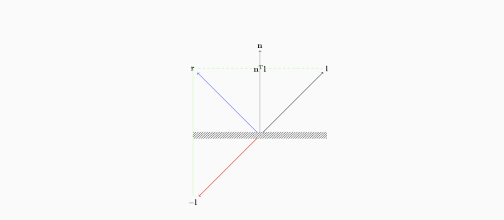
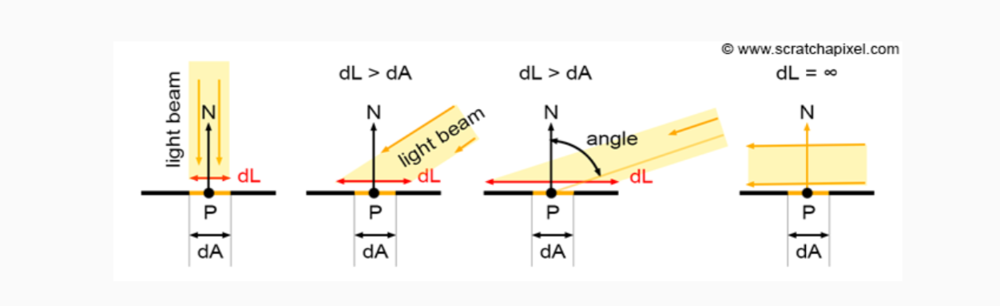

然后就开始搞各种光照了，光照的渲染也是现在图形学一个很热门的研究方向。光照的最重要的作用就是为了塑造真实感，物体的材质都需要用光照体现，超级重要的！
光照计算
计算面片的法向量
\begin{align}
e_0 &= v_1-v_0 \\
e_1 &= v_2-v_1 \\
n &= e_0 \times e_1
\end{align}
反射
计算反射光，假设入射光向量为 $l$，反射光向量为 $r$

则入射光在法线上的投影的长度（标量）就是
$$
n^Tl = |n||l|\cos\theta_l
$$
入射光关于原点的中心对称是 $-l$，通过相似三角形的几何关系可以知道，$-l$ 的顶点到 $r$ 的顶点的距离为 $2n^Tl$，那么 $-l$ 的顶点到 $r$ 的顶点的向量就是 $(2n^Tl)\cdot n$
那么我们就有
\begin{align}
-l + r &= (2n^TI)n\\
r &= 2(n^TI)n-l\\
\end{align}
折射
根据 Snell 原理计算折射
$$
n_1\sin(\theta_1)=n_2\sin(\theta_2)
$$
光照性质
平面材质
- 镜面: 完全反射
- Glossy: 由于平面的缺陷，光线反射发生随机抖动
- 漫反射平面: 由于物体内部的结构，反射光与入射角的角度无关

漫反射渲染需要计算 foreshortening term，这主要是由于当光线斜着入射的时候，平面照到光的面积就会更大。假设光垂直入射的时候，面积为 $dL$，$dA$ 是真实渲染的尺寸，则有
$$
dA = \cos(n,l)dL=n^TldL
$$
光源性质
光线渲染分为
- 镜像光 Specular
- 漫反射光 Diffuse
- 环境光 Ambient
计算光照的时候需要把三种光加起来
$$
I_{tot}=f(I_{spec}+I_{diff}+I_{amb})
$$
光照计算使用到 Hadamard 乘，表示为
\begin{align}
a &= b \circ c\\
(a)_i &= (b)_i \cdot (c)_i
\end{align}
在光照计算方程中，$s$ 表示光强，$m$ 表示材料属性，$i$ 表示反射光的颜色
漫反射光: Lambertian 表面
$$
i_{diff}=max(0,n^Tl)m_{diff}\circ s_{diff}
$$
镜像光: Phong 模型
$$
i_{spec}=(r^Tv)^{m_{shi}}m_{spec}\circ s_{spec}
$$
环境光
$$
i_{amb} = m_{amb}\circ s_{amb}
$$
距离衰减
\begin{align}
d&=(s_c+s_l\cdot r+s_q\cdot r^2)^{-1}\\
r&=((s_{pos}-p)^T(s_{pos}-p))^{\frac{1}{2}}
\end{align}
双向反射分布方程 BRDF
$$
f(L,V)
$$
能量守恒
$$
\int f(L,V)dL dV = 1
$$
Helmholtz reciprocity
$$
f(L,V) = f(V,L)
$$
双向扩散平面反射分布方程 BRSSDF
法向量贴图
天空盒：环境贴图
阴影
阴影性质
- numbra 硬阴影
- penumbra 软阴影
- antumbra 交叉
方法
- 使用多个点作为光源
- 使用多个相交面
相机
使用光圈